T4A
Die Lavakanäle
Drei Kanäle voller glühender Lava, überspannt von brennenden Seilbrücken, die hinter dir einstürzen, während Schlangenköpfe an den Ufern Feuerstrahlen speien.
CX-T4ABild folgt

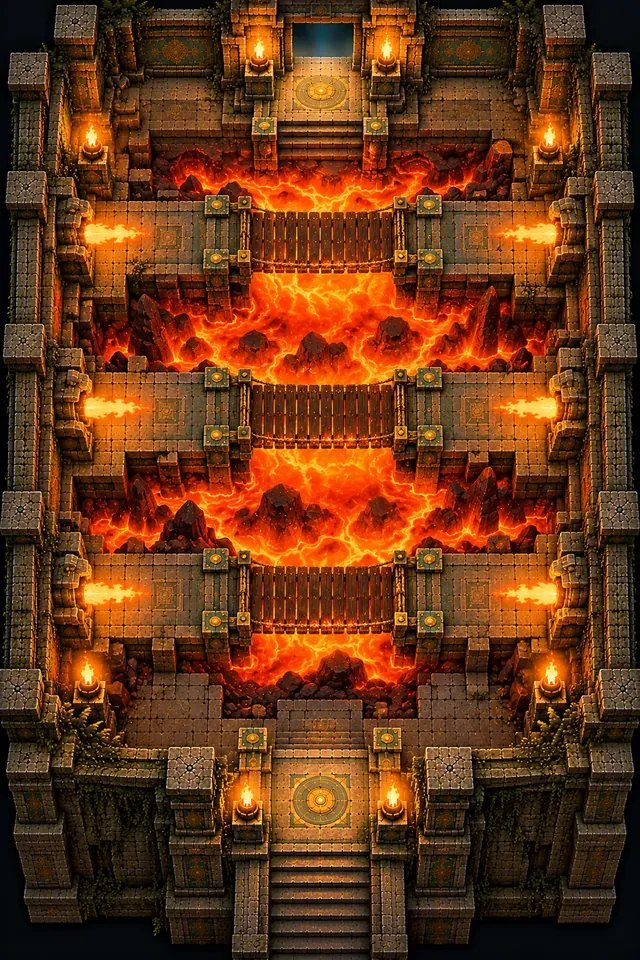
Start / Der Aufstieg
Der Aufstieg
Vier Heiligtümer, vier Elemente: die Stufe, in der Kaya die Elementarkugeln erringt.
„Die Kugeln zerstreuten sich, und Wächter wurden geboren.“
K'in
Jede der vier Ebenen bewahrt eine der verstreuten Kugeln. Feuer, Erde, Wind und Wasser sind dauerhafte Kräfte: Sobald Kaya eine davon besitzt, lassen sich Räume, die sie schon hinter sich hat, neu lesen.
T4A
Drei Kanäle voller glühender Lava, überspannt von brennenden Seilbrücken, die hinter dir einstürzen, während Schlangenköpfe an den Ufern Feuerstrahlen speien.


T4B
Heb die rote Feuerkugel und das Glutweihrauchfass, entzünde die vier Feuerbecken in den Ecken und brenne die von Ranken überwucherte Tür frei.
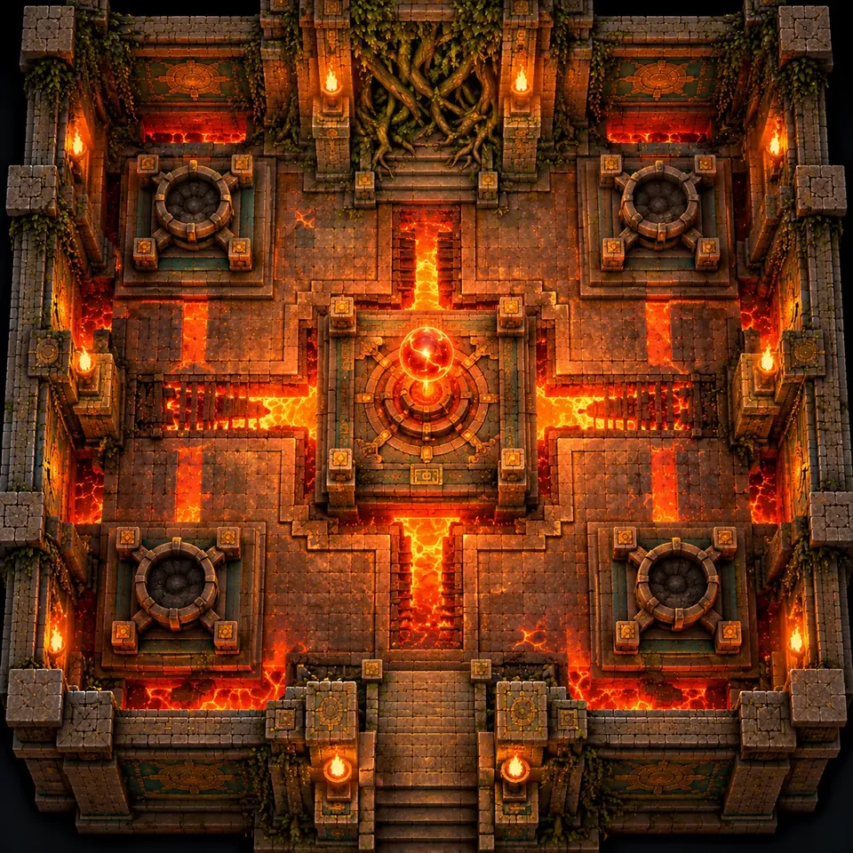
Danach die Portalkammer, und weiter nach oben.
T4C
Eine Gruft voller Knochennischen, stilisiert statt schaurig. Schieb einen Felsbrocken auf schwere Platten, während Wächter heranströmen; rissige Wände verbergen Nebenwege.
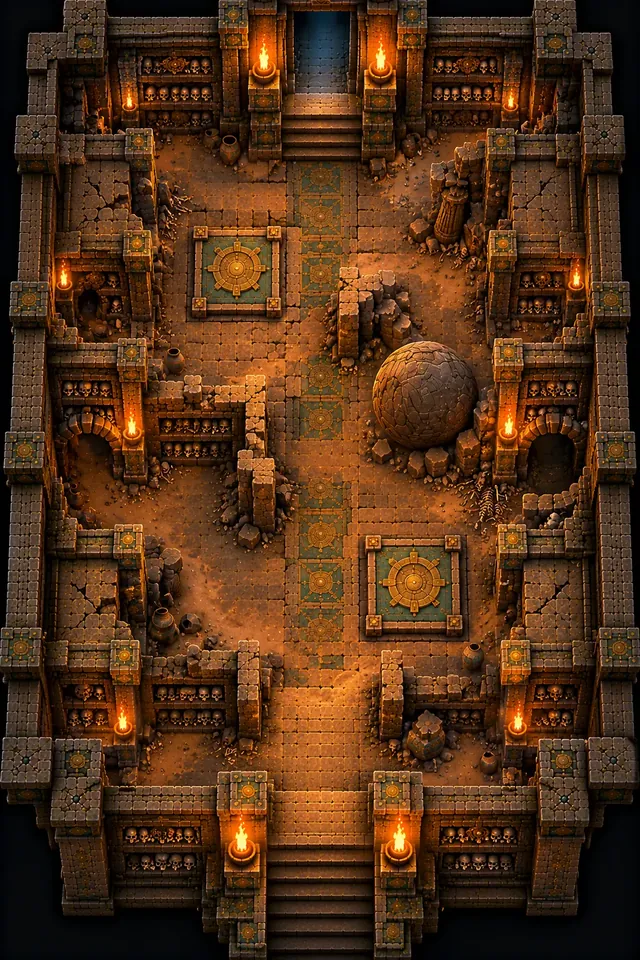
T4D
Ein von Wurzeln überwuchertes Heiligtum. Nimm die Erdkugel, und ihr Bodenstampfer zerschmettert die Wand und legt den Ausgang frei.
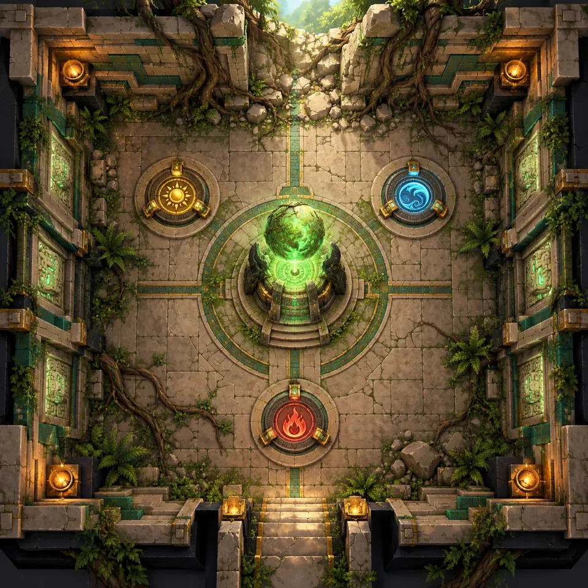
Danach die Portalkammer, und weiter nach oben.

T4E
Eine Halle hoch oben in der Pyramide, deren Außenwand eingestürzt ist, offen zum Himmel und zum Blätterdach des Dschungels. Halt dich an schmalen Simsen fest, während Böen dich zum Rand drücken und Aufwinde dich über die Lücken heben.
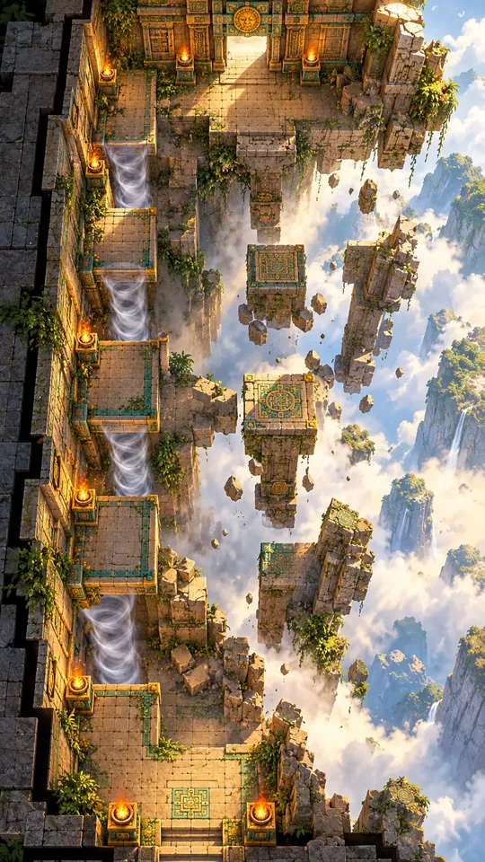
T4F
Eine dachlose Turmspitze mit vier wirbelnden Aufwindsäulen. Nimm die Windkugel und gleite zwischen ihnen zu einem hohen Sims.
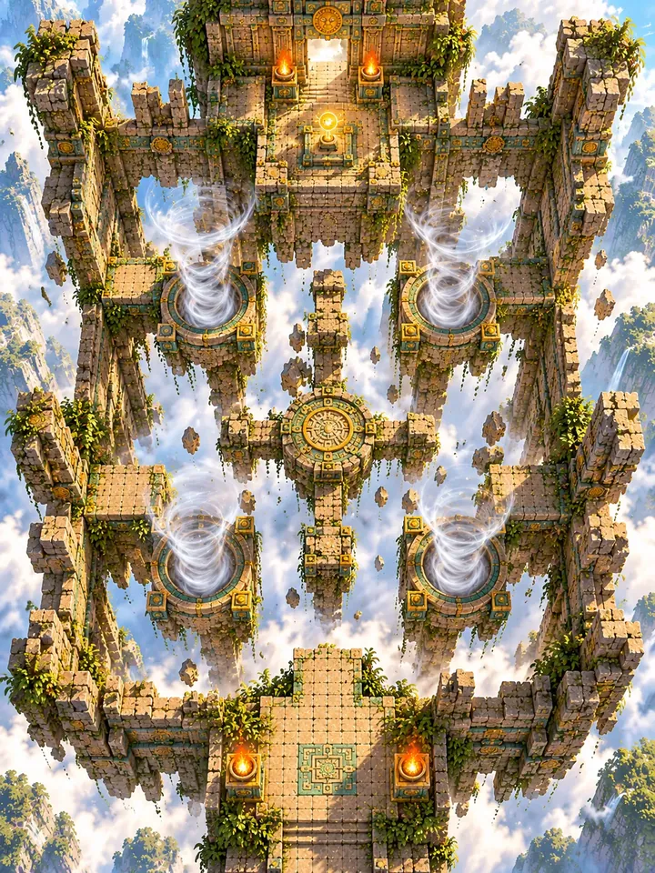
Danach die Portalkammer, und weiter nach oben.
T4G
Eine riesige geflutete Zisterne, deren Wasserspiegel immer weiter steigt. Schwimm gegen die Strömung zu hohen Plattformen und Nischen mit Lufttaschen.
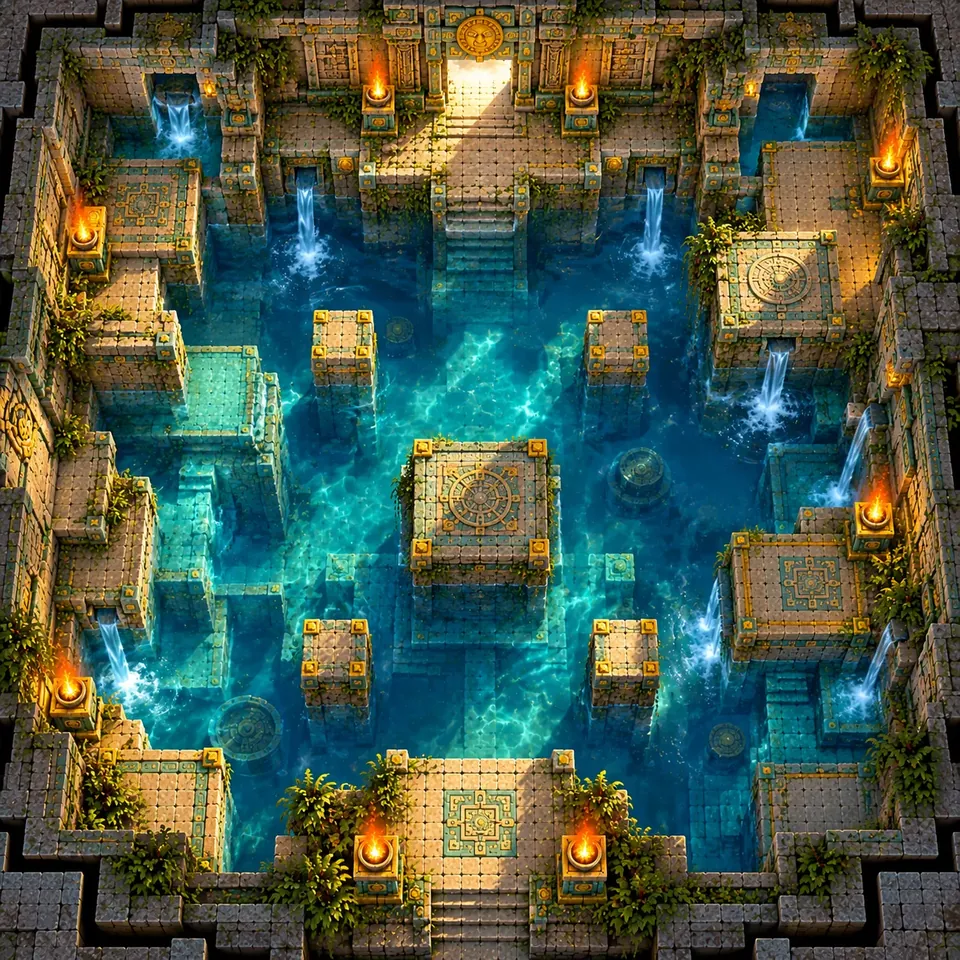
T4H
Heb die blaue Wasserkugel, und das Wasser teilt sich wie zwei Mauern und gibt einen Steinpfad zur Schlüsselkugel frei.
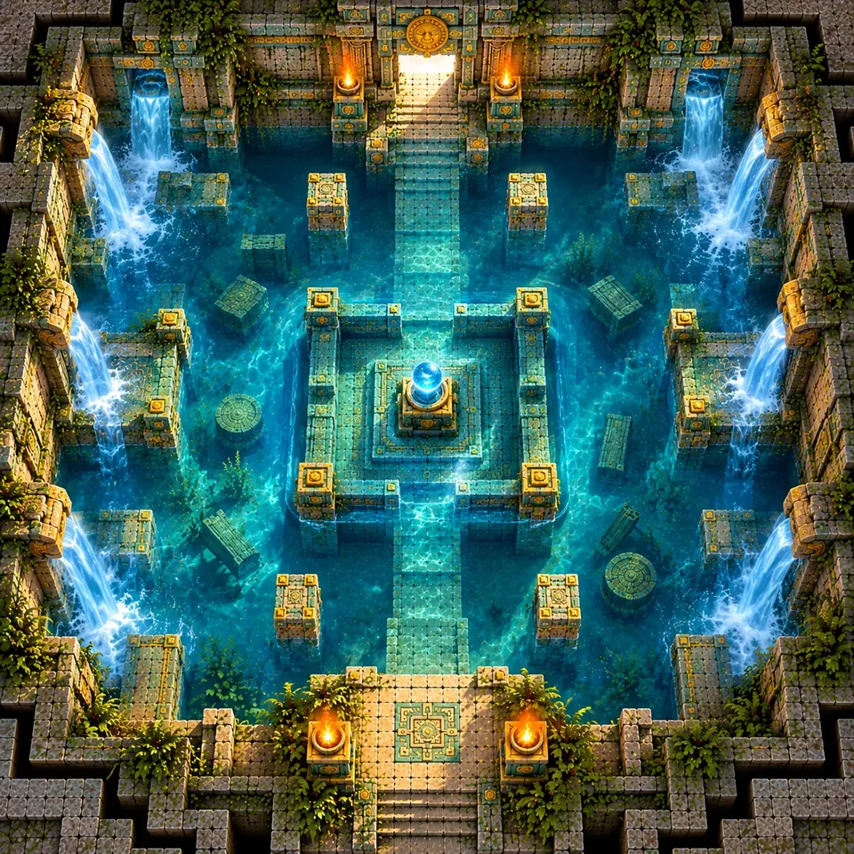
Danach ein Geisterschrein zum Ausruhen und die Portalkammer.

Feuer brennt, Erde bricht, Wind hebt und Wasser teilt. Jede Kugel ist eine dauerhafte Kraft, die Kaya über alle Durchläufe hinweg behält, und jede öffnet Wege in Ebenen, die sie schon erklommen hat.
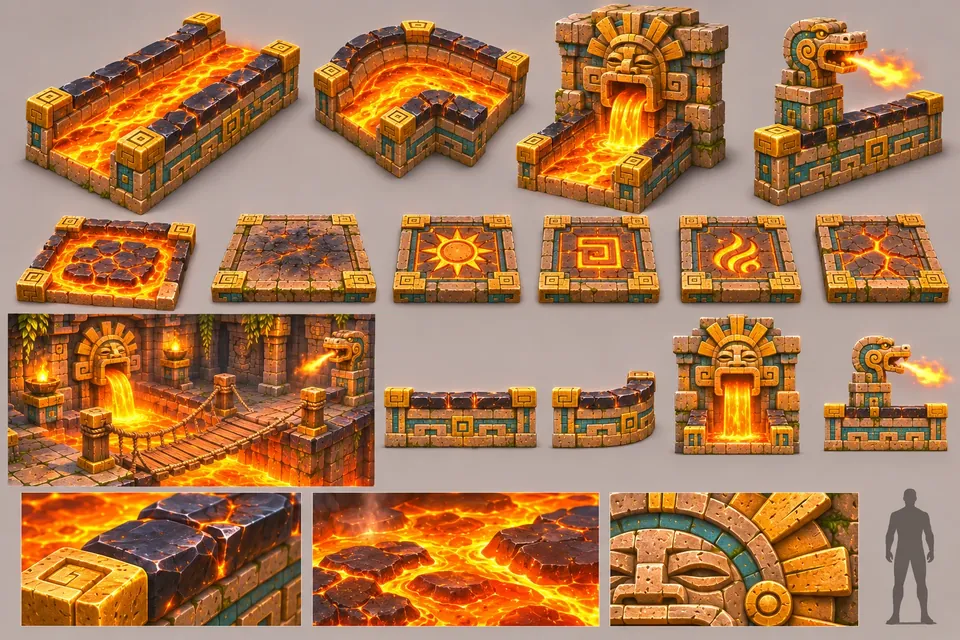
T4-01
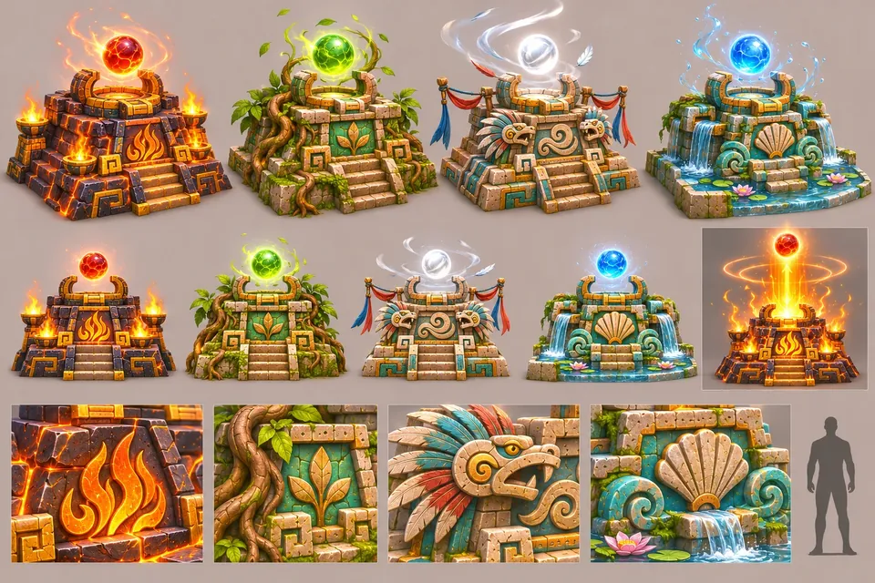
T4-02
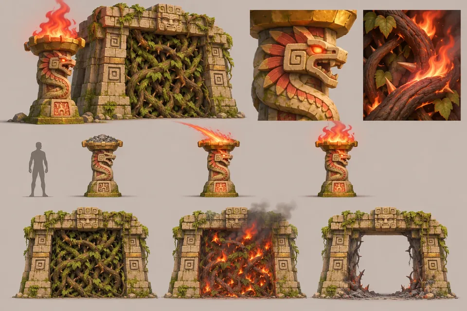
T4-03
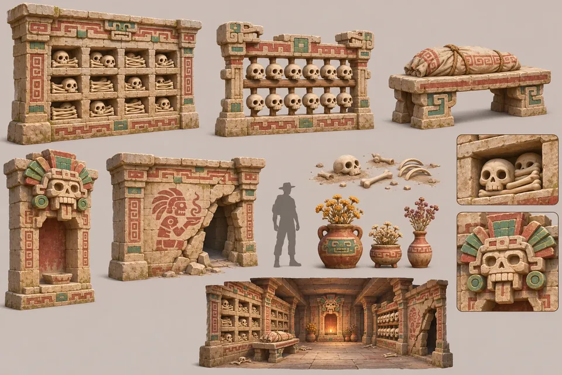
T4-04
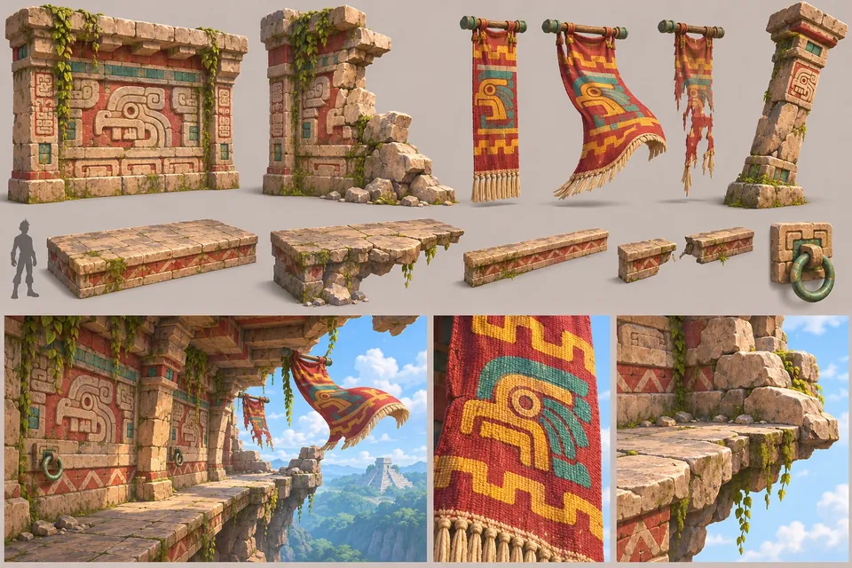
T4-05
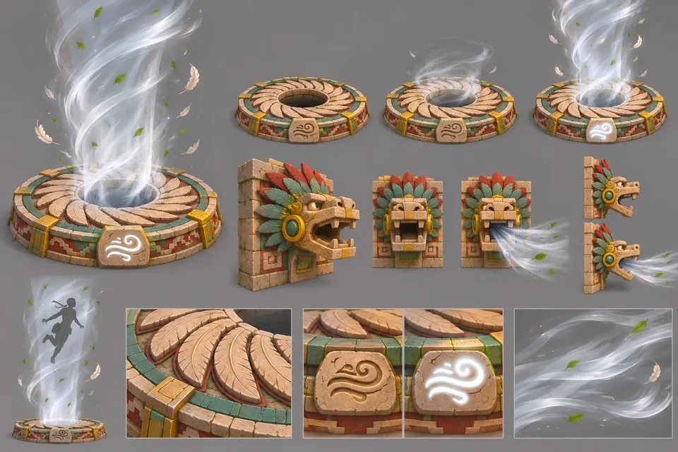
T4-06
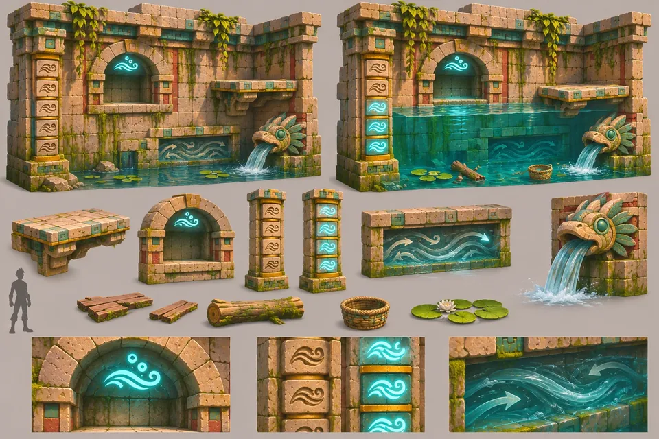
T4-07